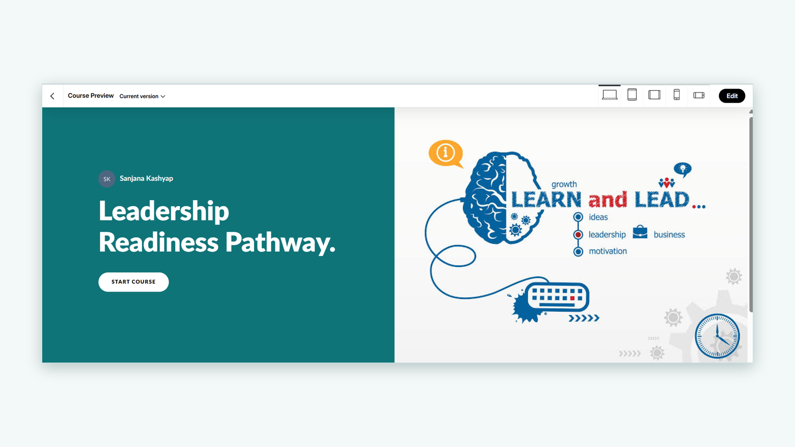
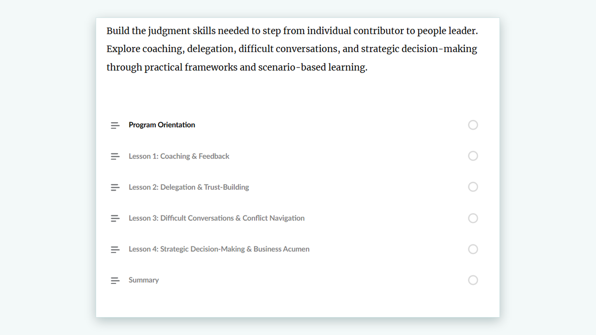
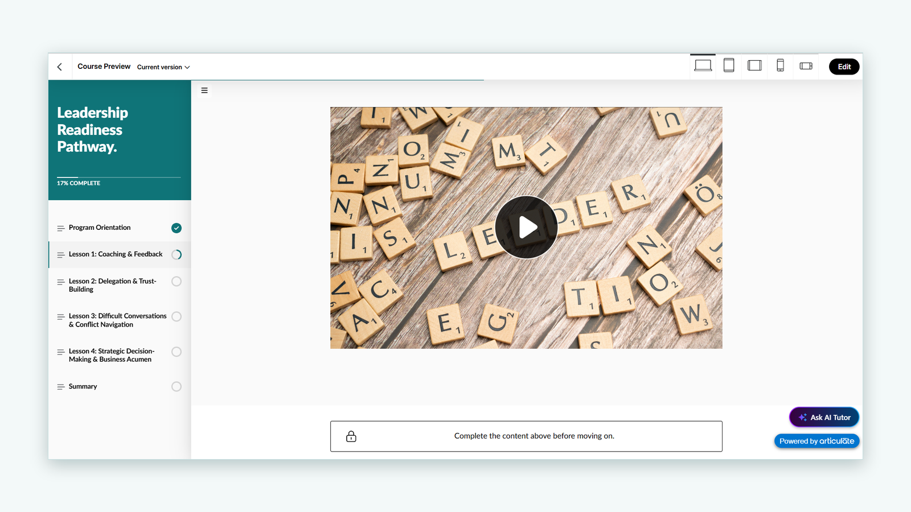
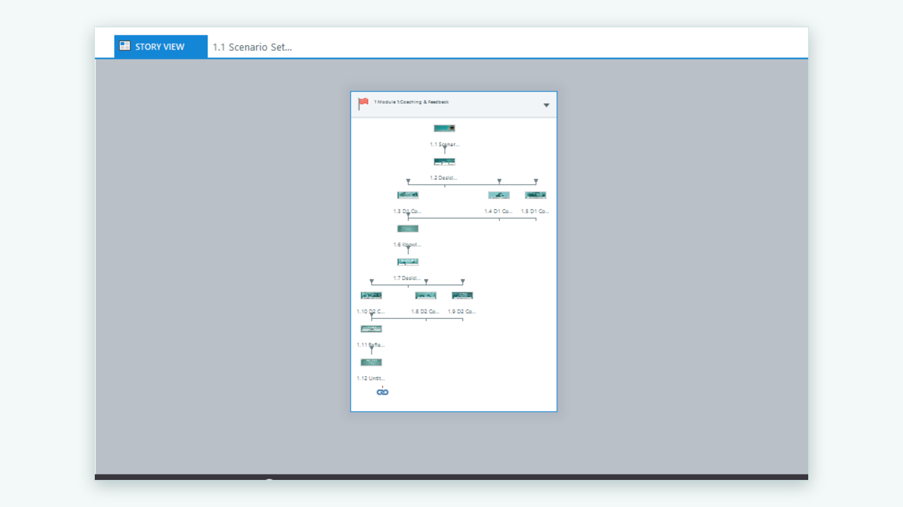
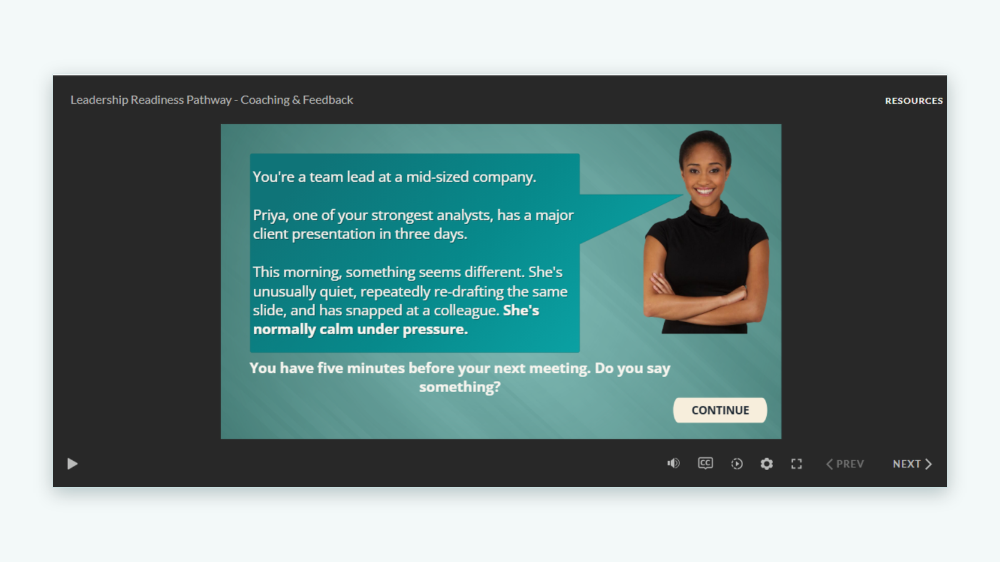
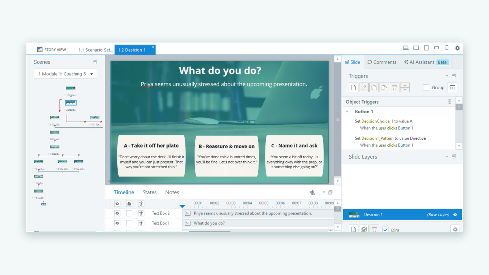
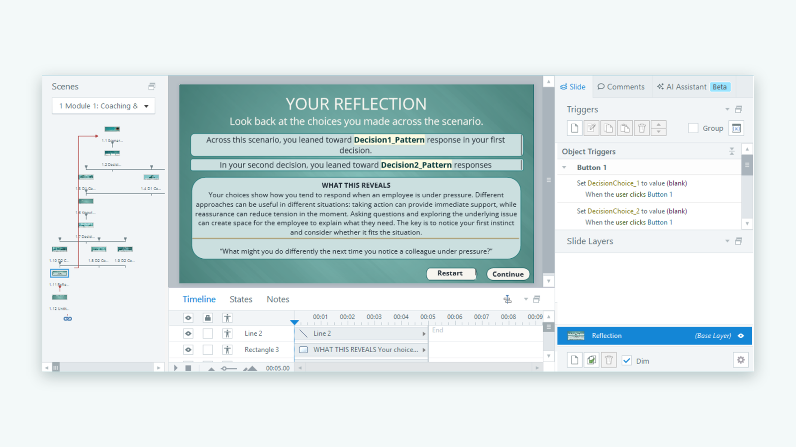
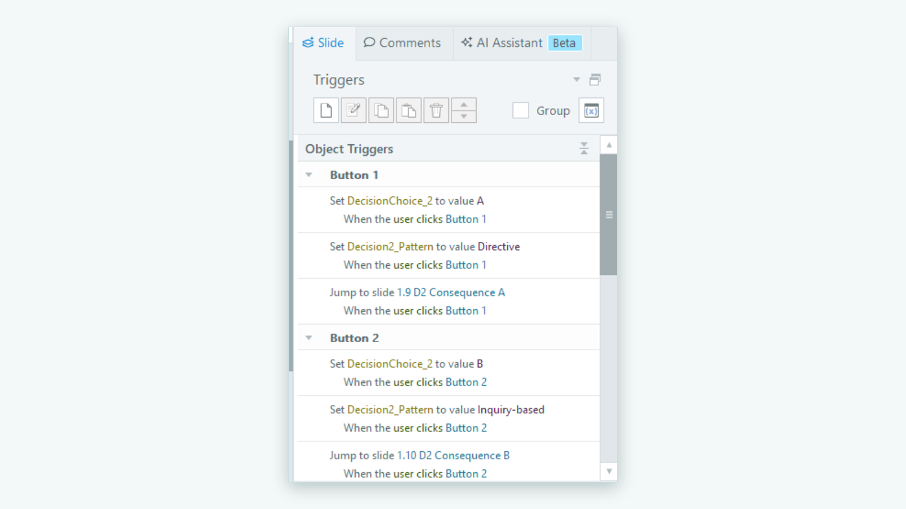
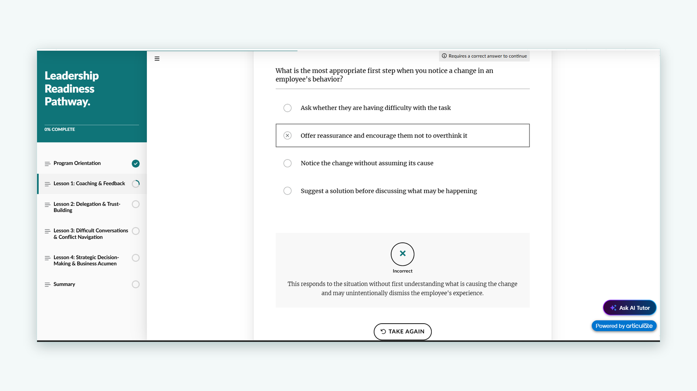
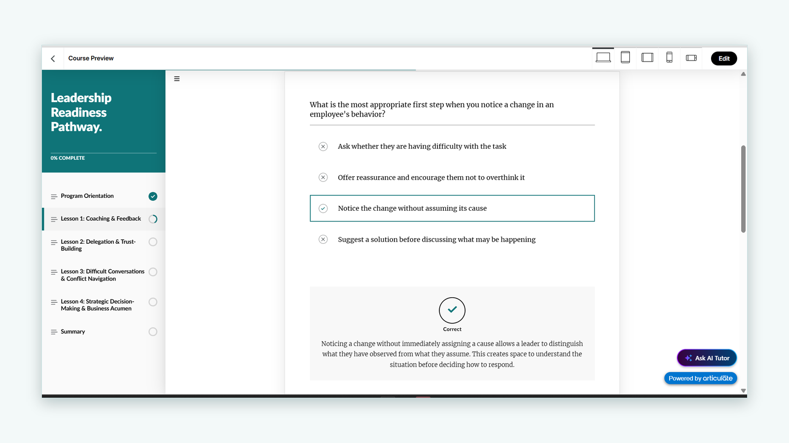

A scenario-based learning experience designed to build foundational judgment skills for high-performing individual contributors preparing to step into leadership.
Launch Leadership Readiness Pathway → Launch Storyline Experience →Organizations often promote strong individual contributors into management without fully preparing them for the judgment required to lead people. The Leadership Readiness Pathway addresses that gap through realistic scenarios focused on coaching, delegation, conflict, and strategic decision-making.
By the end of the Leadership Readiness Pathway, promotion-track individual contributors will be able to evaluate realistic people-leadership scenarios spanning coaching, delegation, conflict, and resourcing trade-offs and select the response that reflects sound managerial judgment, avoiding the failure patterns modelled at each module's decision points.
The Leadership Readiness Pathway is a portfolio project focused on developing practical people-leadership judgment before learners formally step into management.
The four-module pathway is sequenced by increasing interpersonal and organizational complexity, moving from foundational coaching judgment toward strategic decision-making.
Recognize early indicators of performance-related stress and select a supportive coaching response.
Analyse / Evaluate Fully BuiltDecide what to delegate, to whom, and how much oversight to retain.
Analyse Storyboard levelNavigate disagreement or a difficult message without avoiding the issue or escalating it.
Evaluate Storyboard levelWeigh decisions across cost, timeline and stakeholder impact rather than focusing only on the immediate team.
Evaluate / Create Concept levelThe experience treats leadership as a judgment skill rather than a collection of facts to memorize.
Learners make decisions within realistic leadership situations rather than simply selecting answers to recall-based questions.
Choices lead to realistic consequences, allowing learners to see how different leadership responses can affect a situation.
The fully built module uses the learner's earlier decision path to inform what happens later in the scenario.
The experience closes with a variable-driven personalised summary rather than a simple pass/fail score.
The project demonstrates a progression from program-level curriculum architecture to scenario design and interactive development.
Defined the program goal, terminal objective and four-module learning architecture.
Mapped scenario decisions, cognitive demand and consequence paths.
Built the fully developed module using Rise 360 and Storyline 360.
Used personalised outcomes to support reflection and behavior change rather than certification.
A visual walkthrough of the learning experience, showing the instructional structure, Storyline development, scenario interaction, and personalised reflection.

The branded landing screen names the pathway and gives learners a single, clear Start Course action.

A short program description and lesson outline show learners the full journey: orientation, four lessons and a closing summary.

The sidebar tracks progress across lessons, and locked content keeps learners moving through the lesson in sequence.

The Module 1 scenario has two decision points, each with three response paths, that converge on a reflection slide.

A character-led slide places the learner in the role of a team lead who notices a strong performer behaving unusually.

Learners choose between three realistic responses. Each choice stores the selection and a response pattern in Storyline variables.

Variables carry both decisions into a personalised debrief on the learner's tendencies, with a restart option that resets the choices.

Each option records the learner's choice and pattern, then jumps to its own consequence slide, creating the branching path.

Rather than only marking the answer wrong, the feedback explains why it falls short and prompts the learner to try again.

Correct-answer feedback reinforces the reasoning behind the best response, not just the fact that it was right.
Supporting documentation showing the instructional design process behind the Leadership Readiness Pathway.
Documents the overall learning architecture, module structure, and progression.
View Curriculum Map →Shows the detailed scenario, interaction, feedback, and reflection design.
View Storyboard →